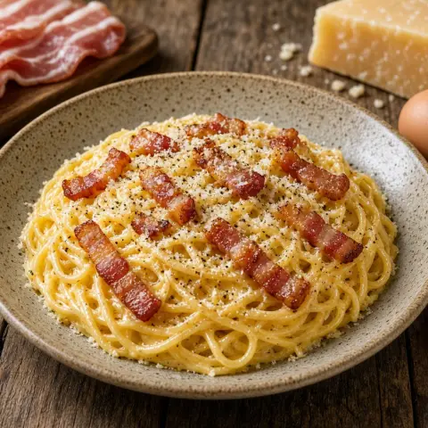

🥓 스파게티 까르보나라
바삭한 베이컨과 달걀, 파르메산으로 만든 부드러운 소스. 생크림 없이 20분 완성.
재료
- 스파게티400 g
- 베이컨175 g
- 달걀4
- 파르메산 치즈100 g
- 후추0.25 작은술
- 소금1 큰술
- 마늘1 쪽
만드는 법
- 베이컨(또는 관찰레)을 가늘게 썰어요. 큰 볼에 달걀 2개와 노른자 2개를 풀고 간 파르메산과 후추를 섞어요.
- 끓는 물 4리터에 소금을 넣고 스파게티를 포장지 안내대로 삶아요. 건지기 전에 면수 한 컵을 떠 두어요.
- 코팅 팬에 기름 없이 베이컨을 중강불에서 4–5분 노릇하게 구워요. 마지막 1분에 다진 마늘을 넣어요.
- 뜨거운 면을 팬에 넣어 베이컨 기름을 입혀요.
- 불에서 내린 뒤 모두 달걀 볼에 넣고 면수 125ml를 더해 1분간 힘차게 저어 크리미하게 만들어요. 바로 내요.